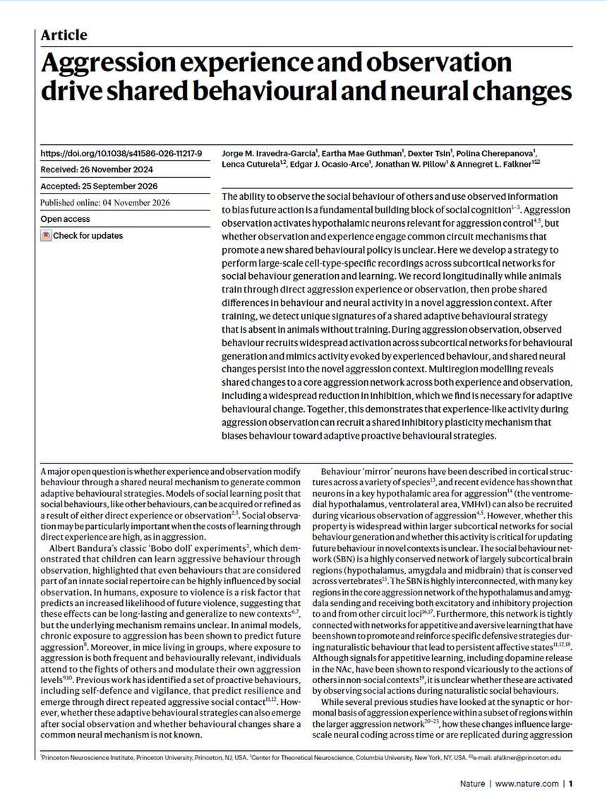

Aggression experience and observation drive shared behavioral and neural changes
Social species learn about conflict without taking part in it, but whether watching recruits the same neural machinery as doing was unknown. Over eight days, male mice gained experience either by direct interaction with a weaker opponent, by watching those encounters from behind a barrier, or with a non-social object, while we recorded excitatory and inhibitory populations simultaneously across twelve nodes of the social behavior network. Observers attended selectively to attacks, and during watching their network activity resembled that of experienced animals, with distinct signatures in regions associated with reward and threat learning. Facing an unfamiliar, harder opponent on day nine, observers and experienced animals both responded faster and spent less time disengaged than controls, without becoming more aggressive overall, and their behavioral transition structure converged. Network modeling identified a shared, persistent decoupling of inhibition from a key hypothalamic output region; chemogenetically restoring that inhibition returned behavior toward the naive pattern.
